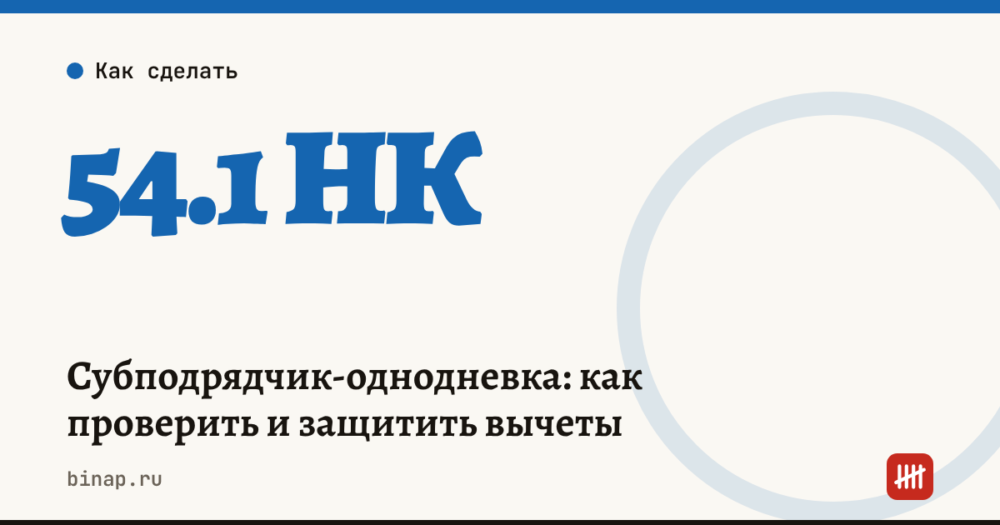

Субподрядчик-однодневка: как проверить и защитить вычеты

Если субподрядчик окажется «однодневкой», налоговая может снять у вас расходы и вычеты НДС по его работам: по ст. 54.1 НК важно, чтобы работу реально выполнил тот, с кем заключён договор. Защита — проверка до договора и документы, которые доказывают, что работы сделал именно этот субподрядчик.
Коротко
- Налоговая проверяет не только документы, но и реальность: были ли у субподрядчика люди, техника и опыт.
- Признаки однодневки: массовый адрес или руководитель, нет сотрудников и имущества, нулевая отчётность, недостоверные сведения в ЕГРЮЛ.
- Проверяйте субподрядчика по открытым данным до договора и сохраняйте результаты.
- Собирайте доказательства реальности работ: акты, фото, переписку, пропуска, сведения о технике.
- ФНС усиливает контроль цепочек поставщиков — проверка дальше первого звена становится важнее.
Сроки, изменения и разборы для ИП и самозанятых — каждое утро в Telegram и MAX. Подпишитесь, чтобы не пропустить.
Признаки однодневки
| Признак | Где проверить |
|---|---|
| Недостоверные сведения об адресе или руководителе | выписка из ЕГРЮЛ на сайте ФНС |
| Массовый адрес регистрации или массовый руководитель | сервисы ФНС «Прозрачный бизнес» |
| Нет сотрудников, имущества, техники | отчётность, сведения о численности в открытых данных |
| Компания создана недавно и сразу берёт крупный объём | дата регистрации в ЕГРЮЛ |
| Нулевая или почти нулевая выручка в отчётности | бухгалтерская отчётность компании |
| Много судов и исполнительных производств | картотека арбитражных дел, банк данных ФССП |
Какие документы собрать
Пример (условный). Подрядчик берёт отделочные работы на объекте и привлекает субподрядчика на 2 млн ₽.
| Что доказать | Документы |
|---|---|
| Субподрядчик существует и проверен | выписка ЕГРЮЛ, скриншоты проверок с датой |
| У него есть ресурсы | список работников на объекте, сведения о технике, опыт похожих работ |
| Работы выполнены им | акты, исполнительная документация, фото с датами, журнал работ |
| Связь с объектом | пропуска, переписка с прорабом субподрядчика |
Если налоговая снимет расходы и вычеты по такому договору, потери — это налог на прибыль или УСН с этой суммы плюс НДС, пени и штраф. Поэтому папка подтверждений стоит потраченного часа.
Банковская гарантия для крупного контракта: ссылка
Что сделать
- Проверьте каждого нового субподрядчика по таблице признаков до договора.
- Запрашивайте у субподрядчика сведения о работниках и технике, которые будут на объекте.
- Ведите папку подтверждений по каждому крупному договору.
- Если пришло уведомление о рисках в цепочке — разберитесь сразу, а не во время проверки.
Как бесплатно проверить контрагента — пошагово. Как налоговая оценивает цепочки поставщиков — сумма рисков по цепочкам. Кассовый разрыв при оплате после приёмки — калькулятор. Все шаги — в разделе «Подрядчикам B2B».
Частые вопросы
Достаточно ли выписки из ЕГРЮЛ? Нет. Выписка показывает, что компания существует, но не то, что она способна выполнить работы. Нужны сведения о ресурсах и доказательства выполнения.
Что если субподрядчик сам привлёк кого-то ещё? Налоговая смотрит на реальное исполнение. Пропишите в договоре согласование субподрядчиков второго уровня и запрашивайте их данные.
Снимут ли вычеты, если однодневкой оказался поставщик моего поставщика? Риск выше, если вы знали или должны были знать о схеме. Документы о проверке и реальности работ — ваша защита.